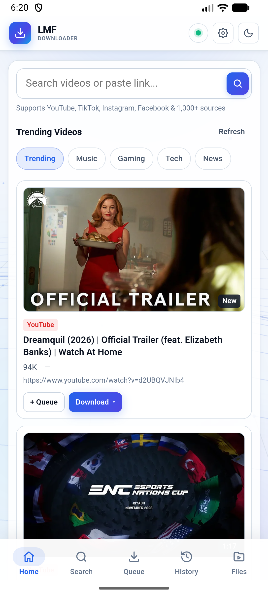
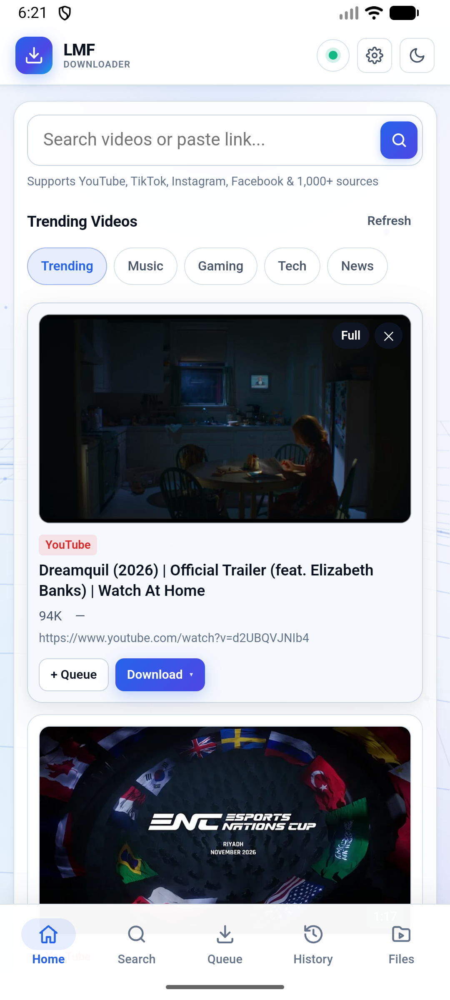
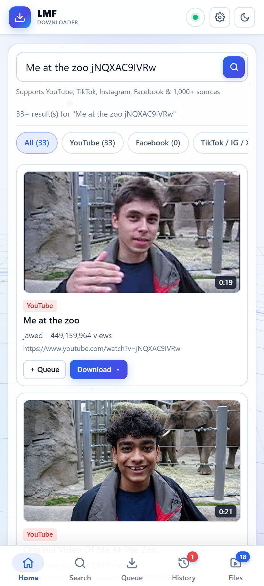
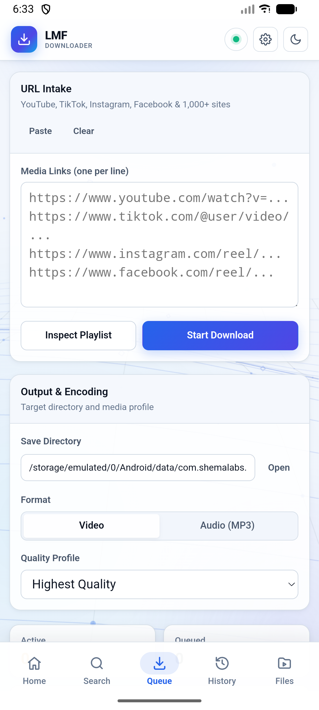
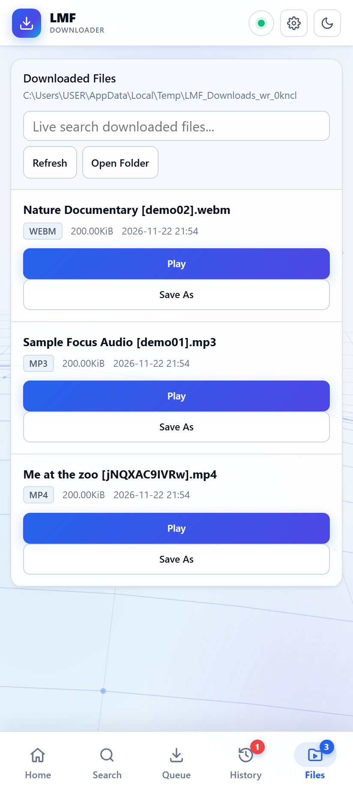
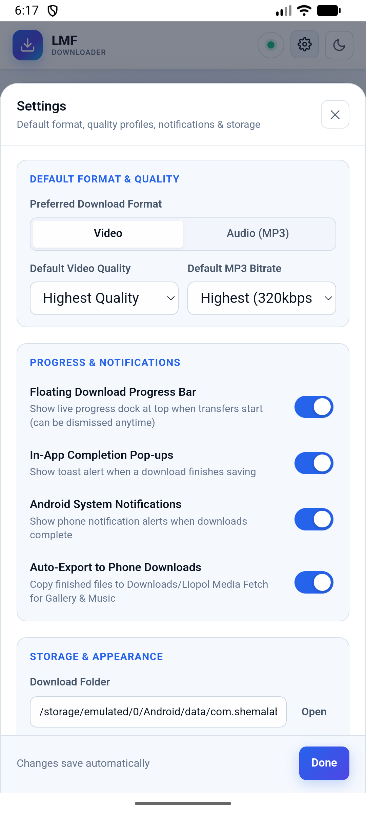

Live Trending & Fast Search
Browse rotating trending videos (Music, Gaming, Tech, News) on Home or search videos and playlists across YouTube, Facebook, TikTok, Instagram, and 1,000+ platforms.
Search, stream previews, and save HD videos or MP3 audio directly onto your Android phone or Windows PC—with built-in trending discovery, batch playlists, background downloads, and instant Android link sharing.
Built by ShemaLabs to give you a clean, private, all-in-one media downloader right on your device—no cloud upload queues, no accounts, and no ads.
Browse rotating trending videos (Music, Gaming, Tech, News) on Home or search videos and playlists across YouTube, Facebook, TikTok, Instagram, and 1,000+ platforms.
Tap any thumbnail on mobile to preview clips straight inside the card without pop-ups, and expand widescreen videos cleanly into landscape fullscreen.
Tap Share inside YouTube, Facebook, TikTok, or Instagram and choose LMF Downloader—the link opens and inspects automatically ready to save.
Download highest available or preferred video resolution cleanly merged into MP4, or extract high-bitrate MP3 audio files offline.
Dismiss the Live Downloads dock while files keep downloading cleanly in the background, complete with Android alerts and failed transfer recovery.
Switch seamlessly between Light and Dark themes, monitor your internet status at a glance from the header dot, and play saved files anytime.
Everything runs locally inside the app on your own Android phone or Windows PC—nothing gets routed through third-party websites.
Pick a trending clip, search keywords, paste a playlist/video link, or share straight from another Android app.
Tap Download to choose Video or MP3 audio quality, or tap + Queue to line up multiple downloads at once.
Our built-in media engine fetches high-speed audio/video streams and combines or converts them privately right on your device.
Saved files land in your Downloaded Files library (and your phone Downloads folder on Android) ready to watch offline.
Click any screenshot to enlarge and inspect every view of LMF Downloader on Mobile and Windows PC.

Top search bar, live connectivity status dot, category pills, and instant Refresh.

Plays videos inline right inside the feed with one-tap Fullscreen landscape rotation.

Filter results by platform and save with compact + Queue and Download actions.

Paste one or many links, inspect playlists, pick Video or MP3, and set quality profiles.

Filter completed or failed attempts, one-tap Re-download, or Continue interrupted files.

Search finished MP4 and MP3 files, play directly in-app, or export with Save As.

Set default Video/MP3 quality, floating progress dock, notifications, and folder auto-export.

Comfortable high-contrast dark theme across Home, Search, Queue, History, and Files.

Full-width Windows PC layout with top navigation tabs, trending discovery, preview player, and download controls.
Follow these quick steps to install and start saving videos or music in under two minutes.
LiopolMediaFetch-1.0.2-android.apk file from your notifications or Files app.LiopolMediaFetch-1.0.2-win64.msi installer.